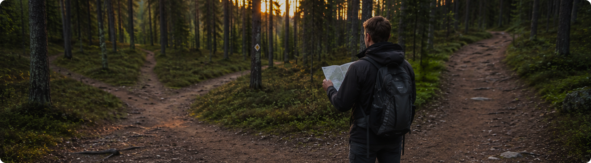
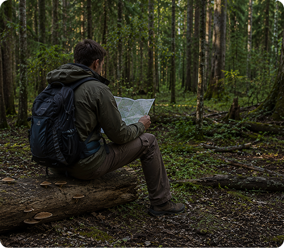
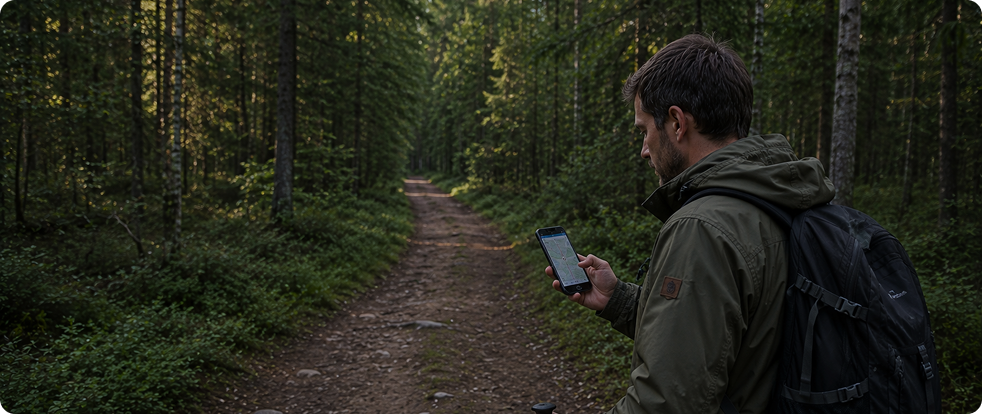
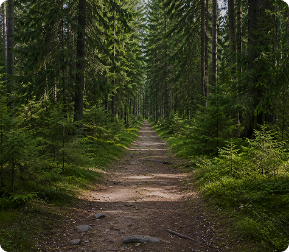
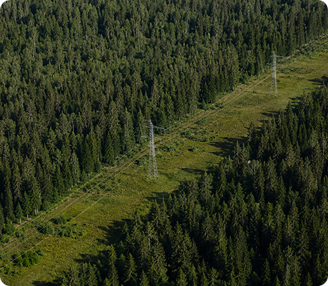
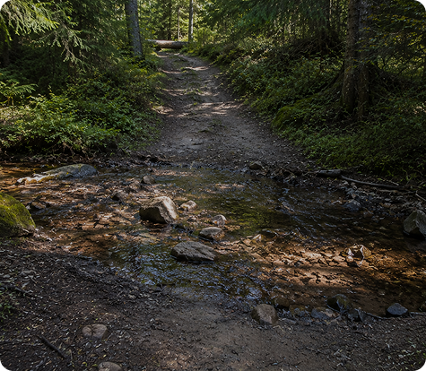
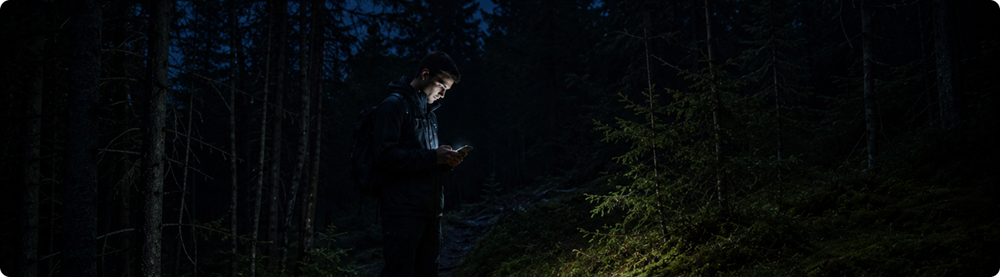

Если лес вокруг перестал казаться знакомым, а тропа неожиданно исчезла, главное — не паниковать и не пытаться быстро решить проблему движением наугад. Большинство людей находят путь обратно именно тогда, когда останавливаются и начинают действовать последовательно.
Потеря ориентировки редко происходит мгновенно. Обычно человек отвлекается, сходит с маршрута на несколько десятков метров или продолжает движение после того, как перестал замечать знакомые ориентиры.
Почему люди теряются даже на маршрутах
Даже короткая прогулка рядом с городом может привести к потере ориентировки. Причиной часто становится невнимательность, желание сократить путь или попытка исследовать новую тропу.
В лесу многие участки выглядят одинаково: похожие деревья, пересекающиеся тропинки и отсутствие заметных ориентиров постепенно создают ощущение дезориентации.

Первые признаки, что ты сбился с маршрута
Иногда человек ещё не потерялся полностью, но уже начинает терять понимание своего положения.
Тропа исчезла
Привычный маршрут больше не выглядит знакомым
Нет ориентиров
Ты не можешь вспомнить последние заметные объекты
Нет направления
Появляются сомнения, откуда ты пришёл
После появления этих признаков лучше остановиться и оценить ситуацию, чем продолжать движение случайным образом.
Главное правило — остановиться
Самая частая ошибка потерявшихся людей — продолжать идти дальше в надежде случайно найти выход.
На практике это также увеличивает расстояние от знакомого маршрута и усложняет поиск.
Остановка помогает успокоиться, восстановить маршрут в памяти и принять решение без спешки.
Если ты понял, что потерял ориентиры, остановись. Несколько минут спокойной оценки ситуации почти всегда полезнее, чем движение наугад


Что сделать в первые минуты
Остановись
Не продолжай движение без понимания направления и текущего положения
Вспомни маршрут
Попробуй восстановить последние ориентиры, развилки и заметные объекты
Проверь карту
Открой навигатор, офлайн-карту или бумажную карту маршрута
Оцени связь
Посмотри уровень сигнала, заряд устройства и доступность связи
После этого станет понятно, есть ли возможность самостоятельно вернуться или стоит оставаться на месте.
Как использовать ориентиры вокруг
Лес редко бывает полностью одинаковым. Даже небольшие детали помогают восстановить направление движения.
БОЛЬШЕ В ДЗЕНЕ
Обращай внимание на:
Тропы
Помогают определить направление движения и найти знакомый маршрут
Просеки
Часто выводят к дорогам, линиям электропередач или населённым пунктам
Линии электропередач
Заметные ориентиры, которые удобно использовать для навигации
Ручьи
Помогают понять рельеф местности и направление движения воды
Дороги
Самый надёжный ориентир для выхода к людям
Заметные холмы
Позволяют оценить окружающую местность с высоты
Чем больше ориентиров удаётся собрать, тем легче понять своё положение.



Когда лучше оставаться на месте
Во многих ситуациях остановка оказывается самым безопасным решением.
Наступает вечер
Видимость снижается, а знакомые ориентиры становятся менее заметными
Заканчивается заряд телефона
Важно сохранить возможность связаться с близкими или спасателями
Ухудшается погода
Дождь, ветер и туман значительно усложняют навигацию
Рядом находятся дети
Лучше сохранять спокойствие и не увеличивать расстояние перемещением
Нет понимания направления
Беспорядочное движение чаще уводит дальше от маршрута
Спасателям и близким намного проще найти человека, который остаётся на одном месте.
Что делать, если начинает темнеть
С наступлением сумерек ориентироваться становится значительно сложнее.
Найти сухое место
Выбери участок, защищённый от ветра и осадков
Надеть дополнительную одежду
Сохраняй тепло и избегай переохлаждения
Сохранить заряд телефона
Уменьши яркость экрана и отключи лишние функции
Сообщить о своём положении
Передай близким ориентиры или последние координаты
Не стоит продолжать движение по незнакомому лесу в темноте.

Когда нужно звонить за помощью
Если маршрут не удаётся восстановить или ситуация ухудшается, не откладывай обращение за помощью.
Место начала прогулки
Сообщи, откуда начался маршрут: парковка, вход на тропу или другое известное место
Время выхода
Укажи, во сколько началась прогулка и сколько времени ты уже находишься в лесу
Последнее известное место
Опиши точку, где ты в последний раз точно понимал своё местоположение
Заметные ориентиры вокруг
Расскажи о ближайших объектах: просеках, ручьях, дорогах, ЛЭП, болотах, мостах
Чем точнее описание, тем быстрее смогут помочь.
Большинство людей находят путь обратно после остановки и спокойной оценки ситуации. Потеря маршрута редко становится опасной сама по себе — риск обычно создают спешка, паника и беспорядочное движение